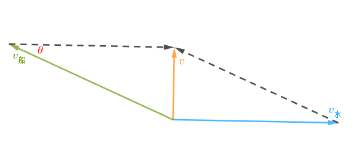

2025 年 6 月
2025.06.11
月考
19.已知样本数据 \(x_1<x_2<\dots<x_n\)，记样本均值为 \(\overline x\)，定义：\(\displaystyle f(c)=\sum_{i=1}^n(x_i-c)^2\) 为样本数据到实数 \(c\) 的偏差平方和，\(\displaystyle g(a)=\sum_{i=1}^n|x_i-a|\) 为样本数据到实数 \(a\) 的距离和\(.\)
(1) 证明：\(\displaystyle \sum_{i=1}^n(x_i-\overline x)=0;\)
(2) 证明：\(y=f(c)\) 的最小值是 \(f(\overline x);\)
(3) 求当 \(y=g(a)\) 取最小值时，\(a\) 的取值\(.\)
难度
综合难度：
-
计算：
-
思维：
答案
(1) 略\(;\)
(2) 略\(;\)
(3) \(\displaystyle a\in\left\{\begin{matrix}\{x_{\frac{n+1}2}\},&(2\nmid n)\\ [x_{\frac n2},x_{\frac n2+1}],&(2\mid n)\end{matrix}\right..\)
Warning
月考提供的的标准答案在 (3) 并不正确。
因为题目问的是 \(a\) 的取值，应当是一个集合。
(1) 过程
由
得
所以
(2) 过程
\(\mathrm{I}.2\overline x-c\le0\)
此时 \(\displaystyle f(c)\ge\sum_{i=1}^nx_i^2.\)
\(\mathrm{II}.2\overline x-c>0\)
因为 \(c>0\)，\(2\overline x-c>0\)，所以有
即
当且仅当 \(c=\overline x\) 时取等\(.\)
所以
由于 \(n\overline x^2>0\)，所以 \(\displaystyle \sum_{i=1}^nx_i^2-n\overline x^2\le\sum_{i=1}^nx_i^2\)，所以当 \(c=\overline x\) 时取得最小值\(.\)
(3) 过程
两两配对：
-
\(|a-x_1|+|a-x_n|\ge x_n-x_1\)，当且仅当 \(a \in [x_1,x_n]\) 成立；
-
\(|a-x_2|+|a-x_{n-1}|\ge x_{n-1}-x_2\)，当且仅当 \(a \in [x_2,x_{n-1}]\) 成立；
-
\(\dots\)
-
（到最后要分讨：）
-
\(\mathrm I.2 \mid n\)
\(|a-x_{\frac n2}|+|a-x_{\frac n2+1}| \ge x_{\frac n2+1}-x_{\frac n2}\)，当且仅当 \(a \in [x_{\frac n2+1},x_{\frac n2}]\) 成立\(.\)
所以 \(g(a)\) 在 \(a \in [x_{\frac n2+1},x_{\frac n2}]\) 取得最小值 \(x_n-x_1+x_{n-1}-x_2+\dots+x_{\frac n2+1}-x_{\frac n2}.\)
-
\(\mathrm {II}.2 \nmid n\)
\(|a-x_{\frac {n-1}2}|+|a-x_{\frac {n+3}2}| \ge x_{\frac {n+3}2}-x_{\frac {n-1}2}\)，当且仅当 \(a \in [x_{\frac {n+3}2},x_{\frac {n-1}2}]\) 成立；
\(|a-x_{\frac{n+1}2}| \ge 0\)，当且仅当 \(a=x_{\frac{n+1}2}\) 成立。
所以 \(g(a)\) 在 \(a=x_{\frac{n+1}2}\) 取得最小值 \(x_n-x_1+x_{n-1}-x_2+\dots+x_{\frac {n+3}2}-x_{\frac {n-1}2}.\)
-
综上，\(g(a)\) 取得最小值时 \(\displaystyle a\in\left\{\begin{matrix}\{x_{\frac{n+1}2}\},&(2\nmid n)\\ [x_{\frac n2},x_{\frac n2+1}],&(2\mid n)\end{matrix}\right..\)
2025.06.10
【物理作业改】有一条直河宽 \(500\text m\)，某处水流速度 \(v\) 与离该处最近岸边距离 \(x\) 关系为 \(v=\frac2{250}x\)。有一条小船在静水中速度为 \(4\text{m/s}\)，如果想让这艘船过河路程最小，那么需要多少时间小船才能过河？
注意
该题目所用知识点可能超出高中知识范围。
难度
综合难度：
- 计算：
答案
过程
首先由于过河路径最短，我们需要过河路径与河岸垂直，即速度与河岸垂直。
画出速度合成图：

当水流速度 \(v_水\) 最大时，\(v_水=2\text{m/s}<v_船\)，所以对于任意时刻一定能满足速度与河岸垂直。
考虑前半段（后半段与前半段类似），根据上图，我们可以得出
所以
换元，设 \(u=\frac1{500}x\)，即
由 \(\int \frac{1}{\sqrt{1-x^2}}\text dx=\arcsin(x)+C\) 且 \(\frac{1}{\sqrt{1-x^2}}\) 在 \([0,\frac12]\) 连续得
由于我们只考虑了前半段，而后半段与前半段等价，所以 \(t_{总}=\frac{125\pi}3.\)
\(\int \frac{1}{\sqrt{1-x^2}}\text dx=\arcsin(x)+C\) 的证明
考虑 \(\frac{\text d\arcsin x}{\text dx}\)，设 \(u=\arcsin x\)，则 \(x=\sin u.\)
那么
由于 \(\frac{\text dx}{\text du}=\cos u\)，即
由微积分基本定理，
得证\(.\)
2025.06.04
改编题
暂存
【1 改】抛掷一枚质地均匀的硬币，如果连续抛掷 \(\text{1 000}\) 次，已知其中 \(999\) 次正面朝上，那么剩下 \(1\) 次正面朝上的概率为____\(.\)
难度
综合难度：
- 计算：
答案
过程
我们可以用 \(1\) 代替硬币正面朝上，\(0\) 代替硬币反面朝上，那么 \(999\) 次正面朝上就有以下 \(1001\) 种情况：
-
\(111\dots111\)：全都正面朝上；
-
\(011\dots111\)：第 \(1\) 个反面朝上，剩余正面朝上；
-
\(101\dots111\)：第 \(2\) 个反面朝上，剩余正面朝上；
-
\(110\dots111\)：第 \(3\) 个反面朝上，剩余正面朝上；
-
\(\dots\)
-
\(111\dots110\)：第 \(\text{1 000}\) 个反面朝上，剩余正面朝上\(.\)
每种情况出现的概率均等，且只有一种情况满足条件，所以答案是 \(\frac1{\text{1 001}}.\)
至多有一个硬币反面朝上，所以有 \(\left(\begin{matrix}\text{1 000}\\ 1\end{matrix}\right)=\text{1 000}\) 种可能；
还可能全都正面朝上，有 \(1\) 种可能\(.\)
每种可能等概率，所以是 \(\frac1{\text{1 001}}.\)
引理
贝叶斯定理：
（其中 \(P(A)\) 为事件 \(A\) 的先验概率，即不受任何事件影响的概率；\(P(A\mid B)\) 为事件 \(A\)（在事件 \(B\) 影响下）的后验概率，即事件 \(A\) 在已知事件 \(B\) 的情况下发生的概率）
证明
由定义
\(A,B\) 反转
代入上式
证毕\(.\)
假设事件 \(A\) 为“这 \(\text{1 000}\) 次抛掷中全都正面朝上”，事件 \(B\) 为“这 \(\text{1 000}\) 次抛掷中（至少） \(999\) 次正面朝上”，那么 \(P(A\mid B)\) 即为所求\(.\)
显然
为什么第二个是 \(\frac{\text{1 001}}{2^{\text{1 000}}}\)？
别忘了算全都正面朝上的情况。
代入贝叶斯定理可得 \(P(A\mid B)=\frac1{\text{1 001}}.\)
2025.06.03
自我挑战
已知数据 \(x_1,x_2,x_3,\dots,x_{10}\) 的平均数是 \(6\)，标准差是 \(\sqrt2\)，则数据 \(x_1,x_2,\dots,x_5\) 的平均数的取值范围是_____\(.\)
难度
综合难度：
-
计算：
-
推式子：
答案
过程
设 \(x_1,x_2,\dots,x_5\) 的平均值为 \(\overline y\)、方差为 \(s_y^2\)，\(x_6,x_7,\dots,x_{10}\) 的平均值为 \(\overline z\)、方差为 \(s_z^2\)，那么有
又
即
同理
所以
又
所以
又
即
所以
证毕\(.\)
改编题
【例 \(3\) 改】袋子里有四个小球，分别标号 \(1,2,3,4\)，放回随机抽取小球直到小球 \(3,4\) 都被抽到过，求期望抽取次数（平均要抽多少次才能让 \(3,4\) 都被抽到过）。
难度
综合难度：
-
计算：
-
推式子：
答案
过程
考虑抽到 \(3\) 或 \(4\) 的期望次数\(.\)
每一次都有 \(\frac12\) 可能被抽到：
-
第一次被抽到的概率 \(\frac12\)；
-
第二次被抽到的概率 \(\frac12\times\frac12=\frac14\)；
-
第三次 \(\frac12\times\frac12\times\frac12=\frac18\)；
-
\(\dots\)
所以抽到 \(3\) 或 \(4\) 的期望次数是
为什么上面都是 \(\frac1x\)，到了下面 \(\frac2x,\frac3x\) 都出现了？
因为期望是要乘上次数的。
此时我们有了 \(3,4\) 的其中一个，只需再抽到另一个就行了\(.\)
抽另一个的期望也可以使用类似上面的办法计算：
所以答案就是 \(2+4=6.\)
设 \(x_{3,4}\) 为问题的答案，\(x_3\) 为抽到 \(3\) 的期望次数，\(x_4\) 为抽到 \(4\) 的期望次数\(.\)
显然
为什么？
-
这一次抽取可能抽到 \(3\)（概率 \(\frac14\)），此时只需再抽到 \(4\) 即可结束，期望次数 \(x_4+1\)；
-
这一次抽取也可能抽到 \(4\)（概率 \(\frac14\)），此时只需再抽到 \(3\) 即可结束，期望次数 \(x_3+1\)；
-
当然如果运气比较差抽到了 \(1,2\)（概率 \(\frac12\)），相当于什么也没抽到过，白白浪费了一次机会，期望次数 \(x_{3,4}+1.\)
又显然
为什么？
独立思考一下嘛。
为什么？？
为什么不独立思考？
我就是不独立思考！！！
好吧好吧，服了你了。
对于 \(x_3\)：
-
这一次可能抽到 \(3\)，结束，期望 \(1\) 次（\(\frac14\) 概率）；
-
这一次也可能抽到 \(1,2,4\)，那么还是相当于什么都没抽，期望 \(x_3+1\) 次（\(\frac34\) 概率）\(.\)
那 \(x_4\) 呢？
独立思考！！！
把上面三个式子联立解得
所以答案是 \(6.\)